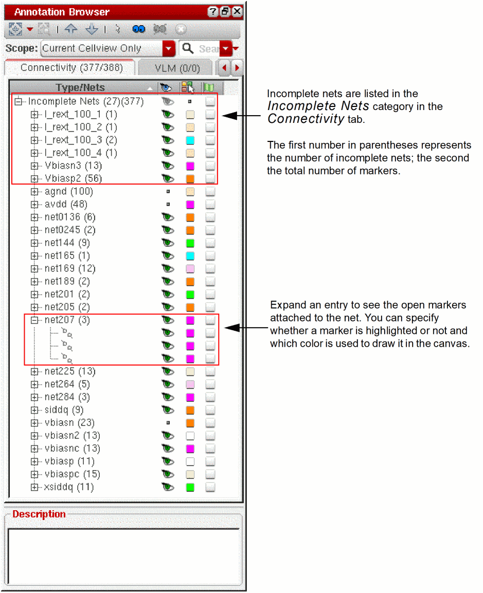

Incomplete Nets
Layout XL can show you incomplete electrical connections between the component terminals, pins, and shapes associated with each net in your design. These incomplete connections include unrouted instance terminals either with no pins or with pins that are not extractable, and instance terminals with dangling must-join instance pins.
For display purposes the system defines an incomplete net as a net which has at least one open marker attached to it in the design database. Each open marker can be drawn as a flight line in the design canvas. Each incomplete net can therefore be represented by one or more flight lines in the design canvas.
Layout XL draws flight lines showing incomplete electrical connections between the devices on each net. The CIW reports how many incomplete nets there are.
If you draw a path between two components that completes the connection, the flight lines disappear. If the path does not complete the connection, the flight lines remain.
To see incomplete net flight lines in the design canvas you must:
-
Extract the connectivity of your design to generate open markers.
The connectivity extractor runs automatically during the Generate All From Source, Generate Selected From Source, and Update Components And Nets commands, and when you use the automatic placement and routing tools. You can also extract your design manually using the Extract Layout menu command or toolbar button. -
Initialize the Annotation Browser assistant.
You use the Annotation Browser to view the markers in your design and specify how they are displayed in the canvas.
Although it must be initialized, the Annotation Browser assistant itself need not be displayed on the desktop in order to show and hide incomplete nets. For example, you can close it and show and hide incomplete nets in postselection mode directly from the Navigator assistant. To do this, though, you must switch off the Remove highlighting when browser is closed option in the Annotation Browser Options form, otherwise there can be no visible incomplete nets to show and hide.
If you select one or more incomplete net markers in the Annotation Browser assistant, you can click the right mouse button and choose Select Nets to cross-select the nets in the layout canvas and Navigator assistant. You can then invoke the router on the selected incomplete nets.
When you edit an instance in place, any flight lines highlighted at the higher level of hierarchy remain highlighted while you edit in place.
Choose Connectivity – Incomplete Nets in the Layout XL toolbar to view related commands.
Related Topics
Connectivity Extraction Use Model.
Return to top